Ah, Bado-chan, our hero! She fights Evil with her trusty Butterfly Blade™, Tangelo, and her brother, Heroto. Although she'd rather be in Philadelphia!
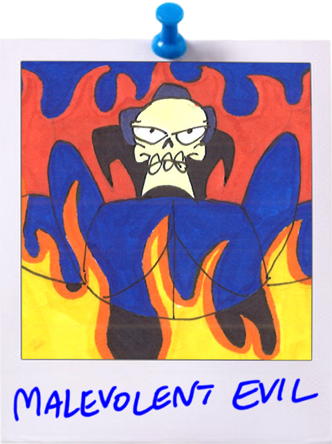Dark Lord and CEO of EVIL, Inc., he plots from his castle atop Mount Skullmore. The dark land of Dangbangstang is his domain. He seeks to conquer the world to impress his daughter, Izzy. Voted twice for Bush.
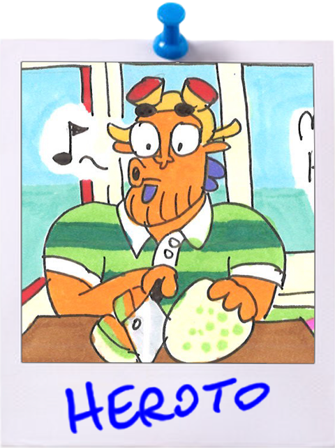A genius mechanic, Heroto built the Flying Duck on which he sails around with his sister Batterattica and their companions. He loves to cook and forage in his spare time.
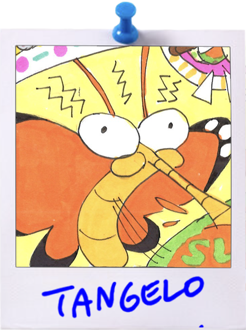One of the fabled Butterfly Blades™, the canteloupe-obsessed Tangelo was discovered by Bado and Heroto and brought into their family. His favorite book is The Death and Life of Great American Cities by Jane Jacobs.
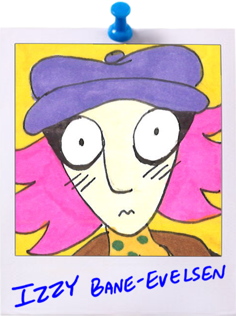Daughter of Mallory Evelsen (Malevolent Evil), Izzy is an interdimensional graduate of Mount Holyoke College. Having just moved home to Mount Skullmore, she has no job, no prospects, and is full of regret.
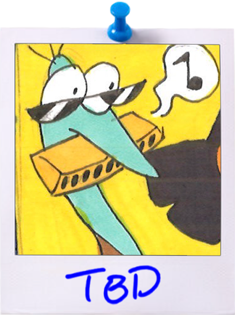This strange bird-thing and ex-con is Bado's new best friend. Will their true name ever be discovered? They keep all their savings hidden in their mattress.
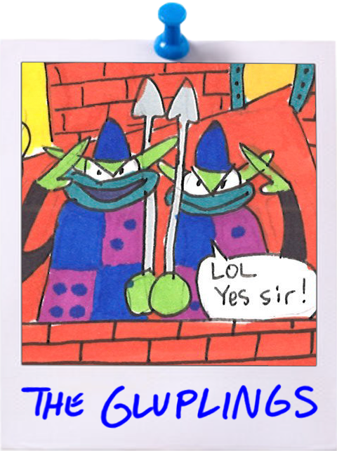The underlings/employees of Malevolent Evil, the Gluplings are fiercely loyal to their boss per Article V sec. 2b of the collective bargaining agreement. They are fearsome and avid tourists.
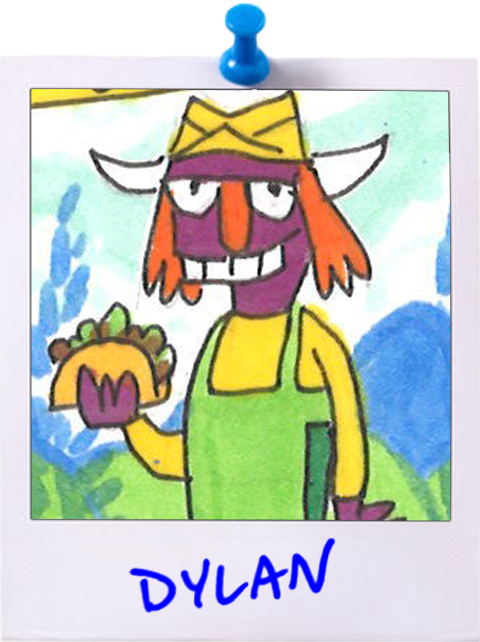Taco Ziggurat's employee of the month, Dylan hopes to save up for a new door for his 1997 Ford Explorer. When he is off work, he likes to eat at Taco Ziggurat and collect the halfling's leaf.
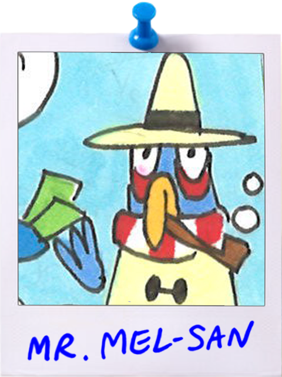A true enterpeneur and job-creator, Mel-San the Melon Monger has put his Isenberg business degree to use starting several successful businesses across Hooplah.
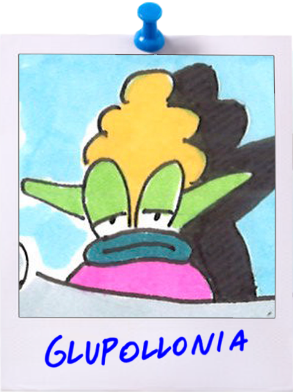Leave the poor woman alone!
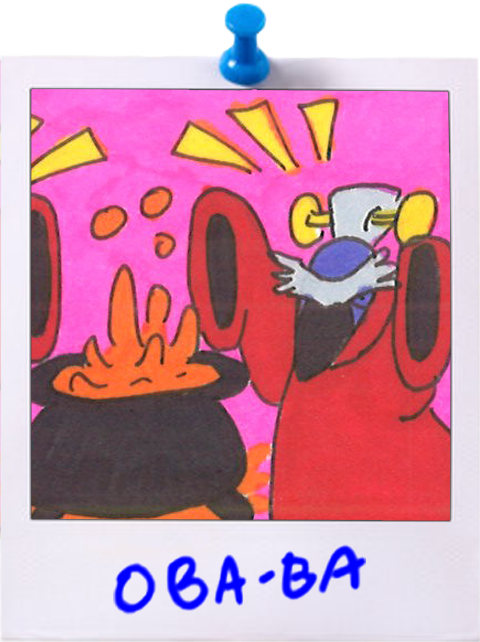She and her sisters are the head honchas serving the Witch Queen ______, but they're just tryna get paid. After work they can be spotted drinking potions at the local dive.
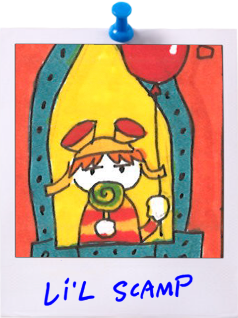A local boy currently being raised to have no sense of accountability. Tests well, but disrepectful in class. Has no crushes.
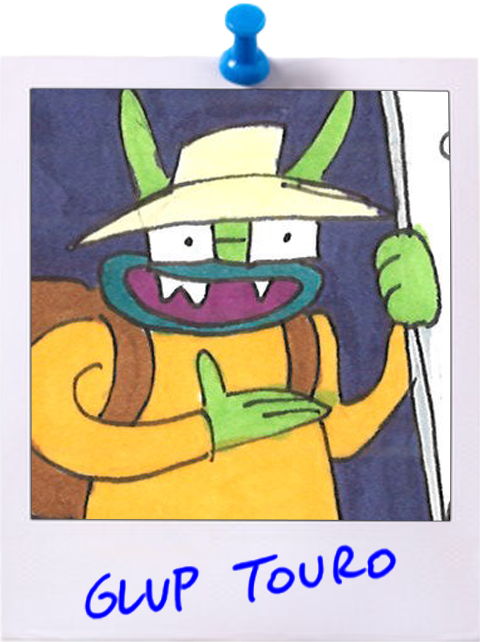You may recognize him from his multiple guest appearances on "Fortress Fixer." Second-highest rated tour guide in Dangbangstang.
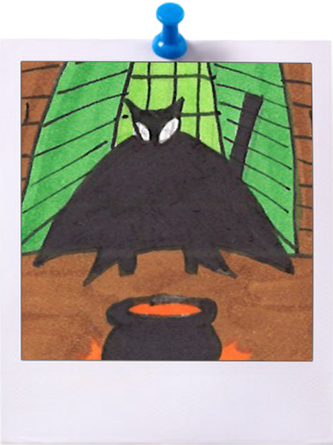??? Who the frick is this??? Fearsome-seeming queen of witchery. Maybe she has a candle label. Guess we'll find out in Episode 2!


[ INSERT BIO HERE ]